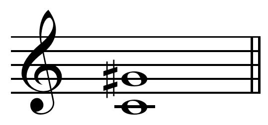

Alexander Skrjabin
Van Romantiek naar Modernisme
Door Thomas Wenas 6W
5-2-2021
Voorwoord
Voor mijn PWS wilde ik iets doen met muziek of filosofie. Na er nog wat langer over nagedacht te hebben wist ik dat muziek mij het interessantst lijkt. Bach kwam als eerste in mij op, omdat ik over bach al heel veel weet. Mijn keuze viel uiteindelijk op de Russische componist Alexander Skrjabin, omdat ik daar nog meer over wilde leren. Skrjabin was zelf ook erg filosofisch en had zeker wat bijzondere gedachten. Mijn interesse voor Skrjabin is in de vijfde klas ontstaan en is nu mijn favoriete componist. Skrjabin fascineert mij enorm met zijn muziek en als persoon. Zijn muziek is een mix van Romantiek en Modernisme. Als ik naar Skrjabin luister geeft dat veel vreugd en ik blijf altijd versteld staan over de genialiteit in zijn muziek. Skrjabin zal voor altijd in mijn leven blijven en ik zal zeker nog veel van zijn stukken spelen.
Inleiding
De meest interessante componist vind ik Alexander Skrjabin. Een Rus met, volgens ooggetuigen, een extreem goede techniek zowel op het klavier als met het pedaal. Tijdens zijn studie aan het conservatorium van Moskou werd hij erkent als de beste leerling. Skrjabin slaagde niet voor compositieleer van het conservatorium, maar alleen voor pianotechniek. Dit kwam doordat hij niet op een lijn zat mij zijn docent qua compositie. Skrjabin was erg geïnspireerd door Chopin, maar zou later geheel zijn eigen stijl krijgen.
Wat mij aanspreekt aan Skrjabin is vooral zijn bijzondere overgang van muzikale stijl en zijn visie op harmonie en kleur. Daarnaast had Skrjabin ook een geheel eigen filosofische gedachte, namelijk dat hij centraal stond in het universum. Hij was het middelpunt, hij was het belangrijkst. hij was god. Zijn muziek moest de mensheid naar een volgend stadium brengen, naar een hoger level van bewustzijn. Wat mij nog meer aantrekt aan Skrjabins muziek zijn twee begrippen die Skrjabin zelf ook gebruikte om zijn werk te omschrijven, namelijk Mystiek en Extase. Zijn muziek is erg energie voorwaarts, maar ook heel licht van karakter. Zijn latere werken vanaf 1903 zijn compleet zijn eigen. Vanaf dat jaar hoor je in elk stuk de zoektocht naar een nieuwe wereld.
Nieuwe en scherpere harmonieën komen voorbij tot het uiteindelijk eindigt in bijna complete atonaliteit. Ook in de atonale werken is het extrinsieke karakter van Skrjabin zeker te horen, zoals in zijn Etude Op. 8 No. 12. Hij schreef in totaal 10 sonatas. De eerste 3 geschreven in laat romantische stijl. Vanaf zijn vierde pianosonate beginnen zijn werken echt te veranderen. zijn vijfde sonate staat al niet meer in een specifieke toonsoort, maar toch heeft deze een nog enigszins tonale aspecten. De zesde sonate heeft Skrjabin nooit voor publiek gespeeld. Hij vond het stuk te duister. Volgens Skrjabin werden door deze sonate demonische krachten binnen gelaten. Skrjabin was dan ook erg geïnteresseerd in filosofische theorieën. Dit komt vooral in uiting bij zijn latere werken. Een van die stukken is Het Mysterium, een zevendaags concert wat een apocalypse zou veroorzaken en de mens opnieuw zal worden geboren. Skrjabin schreef ook een aantal Gedichten of Poèmes. Liszt schreef er een aantal voor orkest, maar Skrjabin deed dit nu ook voor de piano. De eerste die hij schreef waren de 2 gedichten Op. 32. Hierna volgde er nog meer waaronder 2 voor orkest: Le Poème de l'extase op. 54 en Prométhée, le Poème du feu op. 60. Skrjabin had voor Prometheus voor een nieuw instrument geschreven dat hij uiteindelijk nooit heeft gemaakt, het lichtorgel. Skrjabin beweerde namelijk dat hij bij bepaalde tonen verschillende kleuren zag. Dit lichtorgel zou door heel de zaal kleuren projecteren die hij voor ogen had.
In dit profielwerkstuk wil ik er achter komen hoe deze ontwikkeling plaats vond. Dit ga ik doe aan de hand van 4 deelvragen en de hoofdvraag: Hoe verliep de ontwikkeling van Romantiek naar Modernisme in de muziek van Skrjabin?
Inhoud
Voorwoord…………………………………………………………………………………2
Inleiding……………………………………………………………………………………3
Inhoud……………………………………………………………………………………...4
Verklarende woordenlijst……………………………………………………………….5
Biografie…………………………………………………………………………………...6
Hoe heeft de klassieke muziek zich ontwikkeld in Rusland?............................8
Barokmuziek……………………………………………………………………………….8
Johann Sebastian Bach…………………………………………………………………..8
Klassieke muziek………………………………………………………………………….9
Opkomst klassieke muziek in Rusland…………………………………………………10
Conclusie…………………………………………………………………………………..11
Wat is kenmerkend aan de Romantiek?..............................................................12
Romantiek in de schilderkunst en literatuur…………………………………………...12
Romantiek in de muziek………………………………………………………………….14
Overzicht van componisten uit de romantiek…………………………………………..16
Ludwig van Beethoven……………………………………………………………………17
Frederic Chopin…………………………………………………………………………....18
Frans Liszt……………………………………………………………………………….…19
Conclusie……………………………………………………………………………….…..19
Wat is kenmerkend aan het Modernisme?............................................................20
Een nieuwe tijd……………………………………………………………………………..20
Dominant en Tonica………………………………………………………………………..21
Overzicht van componisten uit de moderne tijd………………………………………...22
Expressionisme………………………………………………………………………….....23
Impressionisme……………………………………………………………………………..24
Skrjabin, de modernist……………………………………………………………………..26
Skrjabins harmonie………………………………………………………………………...26
Mystieke akkoord…………………………………………………………………………..28
Conclusie……………………………………………………………………………………28
Waar kwam de inspiratie van Skrjabin vandaan?.................................................29
Filosofie……………………………………………………………………………………...29
Kleur………………………………………………………………………………………….31
Het Mysterium……………………………………………………………………………....32
Conclusie…………………………………………………………………………………..33
Discussie…………………………………………………………………………………..34
Nawoord……………………………………………………………………………………35
Literatuurlijst………………………………………………………………………………36
Logboek……………………………………………………………………………………..
Verklarende Woordenlijst
| Begrip | Betekenis |
|---|---|
| Apocalyps | Het einde van de wereld. |
| Cantate | Religieus muziekstuk dat een verhaal uit de bijbel verteld. |
| Conservatorium | Universiteit waar je een opleiding tot muzikant kan volgen. |
| Symfonie | Drie- of vierdelig muziekstuk voor orkest. |
| Etude | Muziekstuk bedoeld als studiestuk. |
| Fuga | Muziekstuk waarbij een thema wordt uitgewerkt door middel van verschillende stemmen |
| Impromptu | Improviserend stuk |
| Rondo | Muziekvorm waarin hoofdthema wordt afgewisseld met tussenspel |
| Sarabande | Dans uit mexico. Deze muziekvorm werd vooral tijdens de barokperiode gebruikt. |
| Sonate | Drie- of vierdelig muziekstuk. |
| Toonsoort | Reeks van opeenvolgende noten in een vaste volgorde. |
| Afkortingenlijst | Betekenis |
|---|---|
| Op. | Opus: Volgorde van publicatie. Opus 1, is het eerste gepubliceerde werk van een componist. Opus 38, het 38e werk etc. |
| No. | Nummer. |
Biografie
Alexander Nikolaevich Skrjabin werd geboren op 6 januari en kwam uit een militair gezin. Zijn vader Nikolai Skrjabin was vaak door militaire diensten niet thuis en zijn moeder Lyubov Petrovna Scriabina stierf een jaar na zijn geboorte. Allebei de ouders van Skrjabin waren muzikaal. Zijn moeder was een van de eerste Russische vrouwen die afstudeerde aan het conservatorium van St. Petersburg. Ze speelde in concerten niet alleen muziek van bekende componisten, maar ook haar eigen stukken. Nikolai was voor militaire diensten niet veel thuis, hierdoor groeide Skrjabin op bij zijn tante Lyubov Alexandrovna en nog twee grootmoeders. Alexandrovna behandelde hem als haar eigen kind en de twee kregen en zeer sterke band die altijd sterk zou blijven. Skrjabin toonde vanaf vroege leeftijd al liefde voor muziek. Zijn eerste woorden waren ‘’Tante zit’’, wat betekende dat Lyubov piano moest spelen. Vanaf jonge leeftijd zat Skrjabin dus al achter de piano. Ook schreef hij kleine toneelstukjes en bouwde mini-piano’s. Skrjabin was een serieus kind die volgens Lyubov weinig lachte of spelletjes wilde spelen. Op negenjarige leeftijd kreeg hij les van zijn tante. Muziek, maar ook andere vakken werden geleerd. Hij was buitengewoon slim en kreeg nooit genoeg van studeren. Hij had een erg fragiel lichaam, iets wat hij heel zijn leven zal blijven houden. Ondanks zijn postuur gaat hij naar de Cadettencorps. Hij was hier erg populair door zijn muzikale talent. Het jaar erna startte hij officieel met lessen bij Georgi Conus (1862-1933). drie jaar daarna in 1885 kreeg hij lessen bij Nikolai Zverev (1832-1893). Hier werd hij klaargemaakt om te gaan studeren aan het conservatorium.
In 1888 ging Skrjabin studeren aan het conservatorium van Moskou. Hij was de beste pianist van de klas en studeerde af op de eerste plaats. Een diploma voor compositie kreeg Skrjabin niet. Er was vaak onenigheid tussen Skrjabin en zijn leraar Arensky (1861-1906). Skrjabin voerde opdrachten niet uit als de manier van componeren hem niet aanstond. Arensky weigerde dan ook een handtekening onder het diploma voor compositie te zetten en studeerde Skrjabin dus alleen af als pianist.
Mitrofan Belaieff (1836-1904), een rijk Russisch man, hoorde Skrjabin spelen. Belaieff had een grote passie voor muziek en had zijn eigen publicatie bedrijf voor muziek stukken. Belaieff zag veel potentie in de jonge Skrjabin en wilde zijn werken publiceren. Na deze ontmoeting werden de twee erg hecht met elkaar en kreeg Skrjabin een maandelijkse vergoeding voor het componeren van nieuwe stukken. Belaieff liet Skrjabin touren door europa en hij werd daar erg goed ontvangen.
In het jaar 1897 trouwt Skrjabin met Vera Ivanovna Issakovitsj met wie hij vier kinderen kreeg. Tijdens zijn tour had Skrjabin veel schulden gemaakt en moest hij Belaieff terug betalen. Hij werkte voor een korte periode aan het conservatorium van Moskou om wat bij te verdienen. Uiteindelijk kwam hij in 1903 aan bij Belaieff met 33 nieuwe composities, waaronder de vierde pianosonate, zijn derde symphonie en vele preludes. Dit was genoeg om van zijn schuld af te komen en Belaieff liet al de werken publiceren (Op. 30-43). Na twee mislukte symfonieën waren Skrjabins collega’s dit keer wel enthousiast over zijn derde symfonie.
Skrjabin kwam rond deze periode ook in aanraking met verschillende filosofische denkers, wat hem erg interesseerde. Belaieff stierf op 28 december 1903 en maakt de première van de derde symfonie niet meer mee.
Terwijl Vera met de kinderen in België was, verbleef Skrjabin in Rusland. Hier werd hij verliefd op Tatjana Schoelzer (1883-1922). In het geheim hadden de twee een relatie met elkaar. In 1904 gingen Skrjabin en Vera uit elkaar. In 1906 vestigde Skrjabin zich in Brussel samen met Schoelzer en in 1907 gaf Skrjabin een tour door Amerika. In het jaar 1909 gingen ze weer terug naar Moskou, waar hij zou blijven tot aan zijn dood. Hij gaf geregeld concerten en was druk bezig met het schrijven van composities. Na een concert in London ontstond er een puistje op Skrjabins lip. Deze raakte geïnfecteerd en deed enorm veel pijn. Als gevolg hiervan stierf de componist op 14 april 1915. De opkomst voor de begrafenis was zo groot dat er kaartjes uitgedeeld moesten worden (Bowers, 1996).
1. Hoe heeft de klassieke muziek zich ontwikkeld in Rusland?
De bloei van de klassieke muziek in Rusland begon relatief laat ten opzichte van de West-Europese landen. Klassieke muziek in landen zoals Frankrijk en Duitsland waren erg belangrijk in de 18e eeuw. In Rusland was dit nog niet zover. In deze deelvraag gaan we kijken hoe de klassieke muziek opkomt in Rusland
Opkomst van de klassieke muziek in West-Europa
§1.1 Barok muziek
Tijdens de renaissance (1300-1600) werden nieuwe muzikale ideeën ontwikkeld. Door een aantal rijke families, waaronder De’ Medicis, nam de vraag naar kunst toe. Hiertoe behoorde ook de muziek. De rijke families uit die tijd wilden vermaakt worden, dus schreef de componist Claudio Monteverdi de allereerste opera, L’orfeo. Een opera is een theater achtig stuk, waarin dans, acteren en muziek bij elkaar komen ( NPO Kennis, 2021). Ook de meerstemmigheid werd populairder. Veel van de muzikale ontwikkelingen uit de renaissance, hadden invloed op de componisten uit de Barokperiode. Het publiek voor de opera nam steeds meer toe, wat er voor zorgde dat veel componisten uit de Barokperiode opera’s gingen schrijven. De bekendste opera schrijver was Georg Friedrich Händel (1685-1759).
§1.1.2 Johann Sebastian Bach
De bekendste componist uit de Barokperiode was Johann Sebastian Bach (1685-1750). Hij had zelf nooit een opera geschreven, maar had er wel waardering voor. Bach schreef veel religieuze muziek voor de kerk, waaronder cantates en stukken voor orgel. Toch schreef hij ook stukken ter vermaak, zoals Das Wohltemperiertes Klavier en verschillende concerten in de Italiaanse stijl van toen . Bach is de meest invloedrijke componist uit de westerse muziekgeschiedenis. Vooral zijn Fuga's inspirerende veel componisten die na hem kwamen. Frédéric Chopin (1810-1849) liet zijn studenten vaak spelen uit Das Wohltemperiertes Klavier. Franz Liszt (1811-1886) bewerkte een aantal stukken van Bach voor de piano. Felix Mendelssohn (1809-1847) voerde Bach’s Matthäus Passion uit in 1829. Dit sloeg erg aan bij het publiek en hierdoor kregen de werken van Bach ook steeds meer erkenning van het publiek. Bach werd tijdens de romantiek als essentieel beschouwd voor een goede muzikale basis. In sommige conservatoria werd het spelen van Bach verplicht en dit is tot de dag van vandaag nog steeds het geval (Albert Schweitzer, 1905).
§1.1.3 Klassieke muziek
De Barokmuziek wordt door velen gezien als de doorslag naar de klassieke muziek. Muziek werd enorm populair in de Barokperiode wat zorgde voor nog meer ontwikkelingen in de muziek. We gaan nu kijken hoe de muziek zich verder
ontwikkelde in de Klassieke periode en hoe deze zich kenmerkt.
Het begin van de klassieke periode startte na de dood van Bach in 1750. In deze periode werd de muziek van Bach als ouderwets beschouwd en paste niet meer bij de nieuwe tijd. De voornaamste veranderingen ten opzichte van de barokmuziek waren de voorspelbaarheid en eenvoudige harmonie. Het gebruik van veel polyfonie verdween. De melodie werd belangrijker en werd vaak begeleid door de baspartij. Een bekend voorbeeld is de Sonate in C Groot K. 545 van Wolfgang Amadeus Mozart. In dit stuk is duidelijk te zien dat er onderscheid is tussen de baspartij en hoofdmelodie.

Als we dit vergelijken met de eerste fuga uit Das Wohltemperiertes Klavier, zien we dat de sonate van Mozart een stuk eenvoudiger is. Daardoor klinkt het stuk ook erg luchtig, wat gewenst was bij het publiek uit die tijd.
§1.2 Opkomst van de klassieke muziek in Rusland
We hebben nu gekeken naar de muzikale ontwikkelingen in West-Europa. De ontwikkelingen gingen hier erg hard en muziek was razend populair. In Rusland was dit nog niet het geval. De weinige Russische componisten die er waren, kopieerden vooral muziek wat ze hoorden in het westen. In dit stuk ga ik de opkomst van de klassieke muziek in Rusland bespreken.
Het eerste orkest dat in Rusland speelde was in 1802, in St. Petersburg. Er werd geen Russische muziek gespeeld en ook was het niet toegestaan om als Rus te dirigeren. Joseph Haydn (1732-1809) was erevoorzitter. Er werden langzaam kleine orkesten gevormd in Rusland. Het beroep muzikant had in die tijd geen goede status. Een belangrijke man voor het opkomen van de klassieke muziek in Rusland was Anton Rubinstein (1829-1894). Rubinstein was een pianovirtuoos en trad op in veel grote steden in de wereld. Hij liet in St. Petersburg het eerste conservatorium van Rusland bouwen. Het was af in 1862. In 1865 studeerde Pjotr Iljitsj Tsjaikovski af aan dit conservatorium.
Een groep Russische muzikanten die zichzelf Het Machtige Hoopje of De Vijf noemde, was niet heel blij met de komst van het conservatorium. Zij vonden het te westers en het zou er voor zorgen dat er geen Russische identiteit in de muziek te horen was. Deze groep bestond uit; Mili Balakirev, César Cui, Alexander Borodin, Modest Moesorgski, Nikolaj Rimski-Korsakov. Alle vijf hadden interesse voor met name Russische muziek en besloten een groep te vormen om de Russische muziek te stimuleren. Ze waren allemaal amateur componisten. Cui en Rimski-Korsakov werkten beide in het leger. Moesorgski werkt op het ministerie en Borodin was een dokter. Alleen Balakirev was full time muzikant.
De Vijf waren erg nationalistisch en zij vonden dat Rusland zijn eigen muzikale identiteit moest hebben. De eerste componist die volgens de vijf een ‘’echt’’ Russisch stuk had geschreven was Michail Glinka (1804-1857). Glinka gebruikte namelijk als eerste componist Russische volks thema's in zijn stukken. Het eerste stuk waarin hij dit doet is zijn opera Een Leven voor de Tsaar. Dit stuk inspireert andere Russische componisten om ook volks thema’s te gebruiken in hun stukken, zoals Tsjaikovski en De Vijf.
Uiteindelijk bleek de angst van De Vijf voor de komst van het conservatorium onterecht. De studenten die er afstudeerden waren niet verwesterd, maar hadden juist een erg Russische stijl, waaronder Tsjaikovski, Rachmaninov en Skrjabin. Van 1870 tot en met 1890 was Rimski-Korsakov zelfs een professor aan het conservatorium van St. Petersburg. Enkele leerlingen van Rimski-Korsakov waren Anatoli Ljadov (1855-1914) en Alexander Glazoenov (1865-1936). Over Glazoenov zou Skrjabin later zeggen dat hij hem de beste componist vond (Faubion Bowers, 1996, Scriabin, 2e Editie).
Afbeelding 5: Van links naar rechts; Mili Balakirev, César Cui, Alexander Borodin, Modest Moesorgski, Nikolaj Rimski-Korsakov.
Afbeelding 6: Rubinstein, Tsjaikovski, Haydn, Bach
§1.3 Conclusie:
Door de komst van het conservatorium, opgericht door Anton Rubinstein, was het mogelijk om een muziekopleiding te doen in Rusland. De Vijf vonden het idee van het conservatorium te westers en waren tegen. Uiteindelijk bleek de angst onterecht en stimuleerde het conservatorium juist het ‘’Russisch’’ geluid.
2. Wat is kenmerkend aan de Romantiek?
De Romantiek was een kunststroming van ongeveer eind 18e eeuw tot en met eind 19e eeuw. Skrjabin werd geboren tijdens deze stroming, namelijk in 1872. In deze deelvraag ga ik uitleggen wat de Romantiek als stroming inhield en hoe deze invloed had op Skrjabin.
§2.1 Romantiek in de schilderkunst en literatuur
De Romantiek ontstond in Europa eind 18e eeuw als reactie op de Academie, een universiteit die kunstopleidingen aanbood. De Academie bepaalde de regels waaraan een kunstenaar zich moest houden bij het maken van een kunstwerk. Men kreeg genoeg van de klassieke en rationalistische ideeën van de Academie. Een aantal kunstenaars wilden zich afzetten van de academie en hun eigen werken maken. Kunstenaars wilden hun gevoel en emoties kunnen uiten in de kunst. Spanningen in de politiek en tussen landen zorgde voor onrust, hierdoor probeerden veel kunstenaars te ontsnappen uit de werkelijkheid. Dit is dan ook een van de voornaamste kenmerken van de romantiek. Kunstenaars deden dit door zich bezig te houden met fantasiewerelden en idealistische beelden te creëren. In de schilderkunst ging men mooie droombeelden schilderen. In de literatuur schreven schrijvers over de ellende van het leven en hoe ze verlangden naar een ideale wereld zonder problemen (Ad van der Borght et al, 2018). Componisten zoals, Schubert (1797-1828) en Schumann (1810-1856) maakten muziekstukken van verhalen of gedichten uit hun tijd (Wendy Thompson,1991). Zo’n stuk werd een lied genoemd. Een voorbeeld daarvan is Schumann’s Dichterliebe, gebaseerd op Heinrich Heine’s Das Buch Der Lieder. De meeste liederen uit Dichterliebe gaan over liefdesverdriet, wat een typisch romantisch thema is.
Een ander kenmerk van de romantiek was het idealisme. Door de politieke spanningen verlangde men naar een betere wereld. Door middel van kunst probeerde kunstenaars een ideaal te creëren, zo ook Skrjabin. Hij wilde door middel van zijn kunst de mensheid naar een hoger niveau tillen. Een van de eerste voorbeelden van het idealisme van Skrjabin, is te vinden in het koor uit het laatste deel van zijn eerste symfonie Op. 26. Dit is een eerbetoon aan de kunst, waarin de kunst wordt gezien als goddelijk.
O prachtig beeld van het goddelijke,
Harmonies pure kunst!
Wij brengen u graag
Lof voor dat meeslepende gevoel.
Jij bent de stralende hoop van het leven
Je bent feest, je bent uitstel,
Als een geschenk dat je aan de mensen geeft
Uw betoverde visioenen.
In dat sombere en koude uur
Als de ziel vol tumult is,
De mens vindt in jou
De opwindende vreugde van troost.
Kracht, gevallen in de strijd, jij
Wonder boven wonder tot leven roepen,
In de uitgeputte en gekwelde geest
Je kweekt gedachten over een nieuwe orde.
Een eindeloze oceaan van emotie jij
Broed in het verrukte hart,
En zingt de beste liedjes van liedjes,
Uw hogepriester, door u verlevendigd.
Op aarde heerst glorieus
Uw geest, vrij en machtig,
Man opgetild door jou
Voert glorieus de grootste prestatie uit.
Kom, alle volkeren van de wereld,
Laten we de kunst bezingen!
Glorie aan de kunst,
Glorie voor altijd!
Regels uit het gedicht zoals, ‘’Jij bent de stralende hoop van het leven’’ en ‘’Als geschenk dat je aan de mensen geeft’’, laten zien hoe Skrjabin dacht over de kunst. Kunst is voor hem een ideaal dat jou wegneemt uit deze wereld. ‘’Man opgetild door jou’’, Skrjabin wilde met zijn kunst de mens uiteindelijk naar een volgend extatisch niveau tillen. Het gedicht eindigt met de regels, ‘’Glorie aan de kunst, Glorie voor altijd!’’. Skrjabin eert in dit stuk het ideaal; kunst.
§2.2 Romantiek in de muziek
Tijdens de romantiek ging ook in de muziek het gevoel een grotere rol spelen. Muzikanten wilden hun gevoel uiten door middel van muziek. Terwijl de klassieke muziek erg strak gecomponeerd was, gingen romantische muzikanten steeds vrijer componeren. Complexere ritmes en modulaties werden toegepast. Ook speltechnisch gingen componisten de grenzen opzoeken, zoals in Liszt’s La Campanella. Het stuk is gebaseerd op een vioolconcert van de violist virtuoos Niccolo Paganini (1782-1840). In dit stuk van Liszt moet de pianist enorme sprongen maken en grote akkoorden pakken. Ook de hoeveelheid noten die per seconde gespeeld moeten worden is meer dan men ooit had gehoord. Zowel Liszt als Paganini waren dan ook show mannen van hun tijd.
Een andere techniek die veel werd gebruikt, was de polyritmiek. Dit concept is niet helemaal nieuw voor de Romantiek, maar werd tijdens de Romantiek veel meer gebruikt dan stromingen ervoor. Polyritmiek is wanneer twee verschillende stemmen, beide een ander tempo volgen. Een voorbeeld is een stem die vier tellen duurt met daartegenover een stem die drie tellen duurt:
Deze techniek creëert een wat zweverig of dromerig effect, precies wat de romantische componisten zochten. Polyritmiek kan veel verder gaan dan drie tegen vier. Chopin gebruikt het bijvoorbeeld in zijn vierde Ballade.
In dit stuk is de polyritmiek negen tegen acht. In het groen is te zien dat er negen achtste noten de hoofdmelodie vormen. Onderin zijn groepen van zes gevormd door zestiende noten. Telkens op de onderste noot en de bovenste noot klinkt een accent waardoor je per maat vier accenten hebt. De twee maten bij elkaar samen geven acht.
Skrjabin gebruikt deze techniek ook veel in zijn composities. Een voorbeeld daarvan is zijn Etude Op. 42 No. 1:
Hier is het drie tegen vijf. Drie accent noten in de rechterhand tegen vijf in de linkerhand.
Skrjabin - Etude Op. 42 No. 1
S2.2.1 Overzicht van componisten uit de Romantiek:

§2.2.3 Ludwig van Beethoven
De belangrijkste componist voor de opkomst van de romantiek was Ludwig van Beethoven. Net als Skrjabin was Beethoven ook een wonderkind. Al vanaf dat hij vijf jaar oud was, speelde hij op behoorlijk niveau piano. Beethoven (1770-1827) werd geboren tijdens de overgang van het classicisme naar de romantiek. Zijn vroege composities zijn dan ook geschreven in de klassieke stijl, zoals dat van Haydn en Mozart. In het jaar 1802 begon Beethoven steeds slechter te horen, wat leidde tot depressie. Een gevolg van deze gebeurtenis was dat hij meer ging componeren en ook meer ging experimenteren met muziek. De muziek werd persoonlijker en emotioneler dan de klassieke muziek. Een van zijn eerste romantische werken is zijn derde symfonie Op. 55. Tijdens de klassieke periode waren symfonieën vooral luchtige en korte werken voor orkest. De derde van Beethoven was veel langer dan men gewend was. Ook gebruikte Beethoven nieuwe harmonieën die het publiek niet gewend was. Beethovens revolutionaire werk is zijn bekende vijfde symfonie Op 67. Het stuk opent met een dramatisch en herkenbaar thema. Door de hele symfonie heen komt dit thema terug in allerlei variaties. Beethoven was de eerste componist die verschillende bewegingen in een symfonie op deze manier met elkaar verbond. Deze symfonie inspireerde de volgende generatie romantische componisten, zoals Bruckner en Mahler, tot het schrijven van grote en verhalende symfonieën. Beethovens laatste symfonie, zijn negende Op. 125, was net als zijn vijfde een revolutionair stuk. Voorheen was een symfonie een stuk voor orkest alleen, maar Beethoven voegde in zijn negende symfonie een koor toe. Dit was wederom een baanbrekend stuk, dat de componisten die na hem kwamen zal inspireren. Een van hen was Skrjabin, waar de laatste beweging van zijn eerste symfonie Op. 26 een koor bevat. Ook zijn Prometheus Op. 60 bevat aan het einde een koor. Waarom Beethoven zo belangrijk was voor de romantische stroming, was omdat Beethoven meer gaf om het gevoel en emotie dan om de muzikale tradities (Louis Couturier , 1943, Beethoven).
Tijdens Skrjabins studie aan het conservatorium, probeerde hij alle 35 pianosonates van Beethoven uit het hoofd te leren. Hij is bij nummer 12 gestopt, omdat hij het te saai vond worden. Op zijn beurt werd ook Skrjabin een revolutionaire componist door bijvoorbeeld een lichtorgel toe te voegen in zijn Prometheus.
§2.2.3 Frédéric Chopin
Skrjabin raakte in zijn jonge jaren erg geïnspireerd door de stukken van Chopin. Toen hij ging trouwen met Vera, kreeg Skrjabin zelfs een bundel met alle werken van Chopin als cadeau van Belaieff.
Chopin is vooral bekend door zijn nocturnes. Een nocturne is een typisch voorbeeld van romantische ontwikkeling. Voorheen werden termen gebruikt om de structuur van een stuk aan te geven, zoals sonate, rondo of sarabande. Tijdens de opkomst van de Romantiek ontstonden termen die niet specifiek een klassieke vorm aanduiden, bijvoorbeeld de nocturne of impromptu. Een nocturne is een stuk geïnspireerd op de nacht. Hoewel Chopin er mee bekend is geworden, werd de eerste nocturne geschreven door John Field (1782-1837). Een kenmerk van een nocturne en in de muziek van chopin in het algemeen, is dat de melodie het belangrijkst is. De linkerhand speelt vaak een ostinato, een herhalend patroon in de bas. Deze techniek hoor je ook terug in Skrjabins stukken, zoals zijn Nocturnes op. 5. Een andere veelgebruikte techniek in de muziek van chopin is het orgelpunt. Hierbij wordt een lange noot aangehouden, waaromheen zich andere stemmen ontwikkelen. Een goed voorbeeld is Skrjabins Etude Op. 2 No. 1.
In dit stukje is aangegeven wanneer je het pedaal van de piano moet indrukken. Als we naar de bas kijken in de eerste maat, zie je dat de #c onderin het orgelpunt is. De #c wordt vastgehouden en daarboven klinkt de ges als tweede stem. Skrjabin werd ook erg geïnspireerd door de muzikale vormen die Chopin had gebruikt, zoals de Mazurka, een poolse volksdans, en de étude. Skrjabin schreef zelf 3 sets van études en 23 mazurkas. Daarnaast schreef Skrjabin net als Chopin een set van 24 preludes waar alle 24 toonsoorten aan bod komen.
§2.2.4 Frans Liszt
Een andere componist wiens werken Skrjabin heeft beïnvloed was Franz Liszt. Tijdens Skrjabins studie aan het conservatorium had hij zijn linkerhand geblesseerd tijdens het spelen van de Réminiscences De Don Juan, S. 418, een extreem virtuoos stuk van Liszt.
Liszt stond bekend om zijn virtuoosheid. Hij schreef zeer moeilijke stukken om het publiek mee omver te blazen. Liszt veranderde het pianospel enorm door dit soort stukken te schrijven. Hij zorgde er met zijn stukken voor dat de nieuwe generatie pianisten virtuozer werd dan ooit tevoren. Deze nieuwe generatie, waaronder Skrjabin, schreven zelf ook zeer moeilijke stukken, zoals zijn etudes Op. 8 en Op. 42. Het schrijven van complexe stukken was een onderdeel geworden van de romantische stroming. Door bijna alle toetsen van de piano te gebruiken kon de componist nog meer zijn emotie laten horen. Deze stukken zijn vaak ook erg krachtig en dramatisch. Een voorbeeld van Skrjabin is zijn Etude Op. 42 no. 5, waarin een relatief eenvoudige melodie wordt ondersteund door een enorme hoeveelheid noten, wat veel inspanning eist van de pianist en daardoor erg krachtig klinkt.
§2.3 Conclusie
We hebben in deze deelvraag gezien wat de Romantiek inhield en gekeken naar een aantal verschillende componisten uit die tijd. Skrjabin werd het meest geïnspireerd door Frederic Chopin. In zijn beginnende carrière als componist schrijft Skrjabin in de stijl van Chopin en neemt hij ook veel muzikale vormen over. Daarnaast was Skrjabin een virtuoos pianist en speelde dan ook graag stukken van Franz Liszt. Skrjabin schreef zelf ook erg moeilijke stukken, zoals zijn études. Ook was er de invloed van Beethoven op Skrjabins werken. Beethoven was de eerste componist die een koor toevoegde aan een symfonie, iets wat Skrjabin ook deed. We kunnen dus de conclusie trekken dat Skrjabin erg beïnvloed werd door romantische componisten.
3. Wat is kenmerkend aan het Modernisme?
Een nieuwe eeuw naderde, de twintigste eeuw. Eind 19e begonnen steeds meer kunstenaars genoeg te hebben van de romantische stroming en waren toe aan vernieuwing. Het is belangrijk om het modernisme te bespreken, omdat Skrjabin een groot deel van zijn leven tijdens deze tijd had geleefd. In deze deelvraag ga ik de kenmerken van het Modernisme bespreken.
§3.1 Een nieuwe tijd
De negentiende eeuw kwam richting zijn einde en men voelde een nieuwe tijd aankomen. Vol goede moed en positiviteit keken de mensen naar de toekomst. Door de komst van een nieuwe tijd zochten kunstenaars naar verandering om het oude verleden achter zich te houden. Een van de stromingen die ontstond was het Expressionisme. Het Expressionisme begon als een schilderkunst beweging en werd later een muzikale stroming. Ook het Impressionisme is ontstaan vanuit de schilderkunst. Kunstenaars gingen vrijer schilderen en probeerden de sfeer op papier of doek te brengen. Ze wilden het beeld zoals zij dat waarnemen schilderen. Door middel van kleurgebruik en vagere schildertechniek werd dit verwezenlijkt. Later raakte ook componisten hierdoor geïnspireerd en wilde sfeer overbrengen door middel van muziek (Ad van der Borght et al, 2018).
§3.2 Dominant en tonica
Volgens de klassieke westerse tonaliteit staat elk stuk in een eigen toonsoort. Een toonsoort bestaat uit een reeks opeenvolgende noten in een vaste volgorde. In totaal zijn er 24 toonsoorten. twaalf in majeur en twaalf in mineur. De terts bepaalt of een akkoord in majeur of in mineur staat. De terts is de derde noot in de reeks noten van een toonsoort. Als de terts groot is zitten er drie toetsen tussen de eerste noot en derde noot. Als de terts klein is zitten er twee toetsen tussen de eerste noot en de derde noot. Als de terts groot is spreken we van een majeur akkoord, ook wel een groot akkoord. Is de terts klein hebben we te maken met een mineur akkoord, oftewel een klein akkoord.
Nu we weten wanneer een akkoord groot of klein is kunnen we gaan kijken naar de dominant en tonica. De tonica is de eerste noot uit de notenreeks. De dominant is altijd de vijfde noot uit de notenreeks. De dominant is in zowel een groot, als klein akkoord dezelfde noot. Alleen de terts is bepalend of het akkoord groot of klein is. De dominant heeft een bijzondere connectie met de tonica, want de dominant wilt namelijk heel graag weer terug naar de tonica (Bernard Nelleke, 1981).
In de toonsoort van C groot is c de eerste noot, dus de tonica (I). Op de vijfde trap vinden we de G, de dominant (V).
§3.3 Overzicht van componisten uit de moderne tijd
§3.3.1 Expressionisme
Op het principe van tonica en dominant is vrijwel de gehele westerse tonale klassieke muziek opgebouwd. vanaf het modernisme ging men het anders aanpakken. De bekendste zijn de componisten uit de Tweede Weense School zoals, Arnold Schönberg (1874-1951), Anton Webern (1883-1945) en Alban Berg (1885-1935). Zij behoorden tot het Expressionisme, een kunststroming die in begin twintigste eeuw ontstond.. De Expressionisten hadden genoeg van de romantische, tonale muziek en zochten naar vernieuwing. Zo ontstond de atonale muziek. Bij atonale muziek gelden de regels van tonica en dominant niet meer. De stukken werden niet meer in een toonsoort geschreven. Uiteindelijk resulteerde deze opkomst tot de twaalftoonstechniek of dodecafonie, bedacht door Arnold Schönberg. Hierin moeten eerst alle twaalf noten uit een octaaf gespeeld worden voordat je weer een van die noten mag herhalen.
In de Variaties Op. 27 van Anton Webern, gebruikt Webern de twaalftoonstechniek van Schönberg. Als we kijken naar maat tot en met vier zien we dat alle twaalf noten worden gespeeld. Van links naar rechts; e, f, b, g, #f, #c, ♭b, a, ♭e, c, d, #b. Na het spelen van alle twaalf noten doet Webern dit opnieuw.
De atonaliteit van de Tweede Weense School wordt halverwege de twintigste eeuw opgevolgd door het serialisme met componisten zoals, Stockhausen (1928-2007) en Pierre Boulez (1925-2016). In deze stroming gingen de componisten nog meer experimenteren met nieuwe harmonie.
§3.3.2 Impressionisme
Een andere muzikale stroming die begin twintigste eeuw opkwam was het Impressionisme. De Impressionisten dachten heel goed na over wat ze gingen maken. Ze wilde een impressie geven van een bepaald moment of een bepaalde setting. In het kort; ze wilde een sfeer creëren. Bekende impressionistische componisten waren onder andere, Claude Debussy (1862-1918) en Maurice Ravel (1875-1937). Kenmerken uit het Impressionisme zijn het gebruik van septiem akkoorden. Deze akkoorden klinken erg vragend, wat een dromerig en sfeervol effect creëert. Een septiem akkoord bestaat uit een normaal groot of klein akkoord met een noot van de zevende trap er bovenop. Een ander kenmerk is het gebruik van de hele-toonstoonladder of Debussy-toonladder.
Zoals de naam Debussy-toonladder al suggereert, gebruikte de componist Debussy deze toonladder graag. Een hele-toonstoonladder is een toonladder die volledig bestaat uit hele tonen.
hele-toonstoonladder:
Septiemakkoord in C groot en de omkeringen ervan:
In dit stuk van Ravel, Miroirs III. Une Barque sur L'Océan, kunnen we zien hoe de impressionisten sfeer probeerden te creëren. De titel vertaald naar het Nederlands betekent: Een Schip op de Oceaan. Wat gelijk opvalt in dit stuk is de linkerhand. Deze speelt arpeggio's. Een arpeggio is een akkoord waar de noten net na elkaar worden gespeeld. Deze arpeggio's representeren de golven van de zee.Ravel probeert hier door middel van muziek een impressie van de zee te creëren.
§3.4 Skrjabin, de modernist
We hebben nu de belangrijkste muziekstromingen bekeken die begin twintigste eeuw ontstonden. Skrjabin schreef in zijn jonge jaren romantische muziek . Vanaf zijn vierde pianosonate begint hij hier van af te wijken en experimenteert hij met nieuwe harmonieën. In deze deelvraag gaan we kijken welke moderne technieken Skrjabin gebruikt.
§3.4.1 Skrjabins harmonie
Skrjabin is een van de eerste componisten die experimenteert met nieuwe, moderne harmonie. Zijn vierde pianosonate is het eerste stuk waarin dit naar voren komt. In dit stuk maakte hij nog wel gebruik van de dominant en tonica structuur. De stukken die Skrjabin erna schreef tot en met zijn derde symfonie Op. 43, zou je vooral kunnen zien als schetsen of experimenten met deze nieuwe harmonie. Skrjabin maakte veel gebruik van de septiem en noon akkoorden. Een noon bestaat uit een septiem akkoord met een negende noot er bovenop. Hier een voorbeeld van een noon akkoord op G:
Door akkoorden zoals deze te gebruiken ontstaan er veel dissonanten in de muziek. Dissonanten worden al vanaf de barokperiode gebruikt, echter is in Skrjabins muziek het gebruik ervan een stuk groter. Niet alleen wordt de muziek steeds meer dissonant, maar ook meer chromatisch. Chromatiek houdt in dat een noot met een halve noot wordt verhoogd of verlaagd. De Chromatiek wordt steeds meer gebruikt naarmate Skrjabin ouder wordt. Een zeer chromatisch werk van Skrjabin is bijvoorbeeld zijn negende pianosonate geschreven rond 1912-1913. In dit stuk is het concept van de toonsoort bijna niet meer aanwezig.
Als we naar de bovenste noten in de eerste maat kijken is de chromatiek gelijk te zien. Van links naar recht; b, ♭b, a, ♭a.
Verder maakte Skrjabin gebruik van de tritonus. Een tritonus is een akkoord waarvan we de toonsoort buiten de context niet kunnen bepalen. Voorbeelden van tritonussen zijn de overmatige kwarten, kwinten en sexten. Overmatig wil zeggen dat de bovenste noot met halve noot is verhoogd. Ook heb je de verminderde kwarten, kwinten en sexten. Hierbij wordt de bovenste noot met een halve noot verlaagt.

Afbeelding 19: Van links naar recht; overmatige kwart, overmatige kwint, overmatige sext.
Deze akkoorden klinken erg scherp en liggen niet makkelijk in het gehoor. Skrjabin vond zelf juist dat ze erg helder klonken.
§3.4.2 Mystieke akkoord
In het jaar 1908 creëerde Skrjabin zijn eigen akkoord, gebaseerd op zijn filosofische theorieën. Het akkoord kreeg de naam het Mystieke akkoord. Skrjabin was erg geïnteresseerd in het mysterieuze. Hij gebruikte dit akkoord in zijn laatste composities vanaf 2 stukken Op. 57. Het bekendste stuk waarin dit akkoord wordt gebruikt is in Prometheus: Le poème du feu Op. 60. Hierin gebruikte hij allerlei variaties op dit akkoord (Peter Sabbagh, 2003). De opbouw van het akkoord ziet er als volgt uit:
§3.5 Conclusie
De opkomst van het modernisme bracht twee nieuwe hoofdstromingen in de muziek, het Expressionisme en het Impressionisme. Bij het Expressionisme wilden de componisten af van de Romantiek en zo ontstond de twaalftoonstechniek van Schönberg. Bij het Impressionisme was sfeer en indruk erg belangrijk. De componisten wilde bepaalde sferen uiten door middel van muziek. Skrjabin kunnen we niet echt in een van deze stromingen plaatsen. Skrjabin schreef vanuit het gevoel, maar creëerde toch ook sfeer. Ook was de componist al bezig met het schrijven van bijzondere harmonieën, al voordat de twee stromingen tot bloei kwamen. Skrjabin zit een beetje tussen beide stromingen in.
4. Waar kwam de inspiratie van Skrjabin vandaan?
We hebben in deelvraag twee gezien dat Skrjabin veel inspiratie haalde uit de muziek van romantische componisten, zoals Chopin en Beethoven. De moderne stromingen, het Impressionisme en Expressionisme, hadden weinig invloed gehad op Skrjabin. Skrjabin had Debussy en Ravel nooit ontmoet en ook Schönberg of andere Expressionisten had hij niet ontmoet. De Russische modernist Igor Stravinsky (1882-1971) heeft Skrjabin wel ontmoet toen beide mannen in Frankrijk waren. Stravinsky kwam langs bij Skrjabin en was enthousiast over Skrjabins zevende en tiende pianosonate. Stravinsky vroeg wat Skrjabin van zijn stukken vond. Skrjabin antwoordde dat hij niet bekend was met de stukken van Stravinsky. Skrjabin werd dus nauwelijks geïnspireerd door componisten uit zijn tijd. In deze deelvraag gaan we kijken waar de inspiratie voor zijn moderne werken vandaan kwam.
§4.1 Filosofie
Rond het jaar 1900 begon Skrjabin interesse te tonen in filosofische theorieën. Door zijn vriend, Sergey Nikolaevitsj Troebetskoj (1863-1905), sloot skrjabin zich aan bij de Filosofische Gemeenschap van Moskou. Troebetskoj zat er namelijk in het bestuur. Deze organisatie gaf lezingen en organiseerde bijeenkomsten.
Door zijn muziek en filosofie zou Skrjabin een nieuwe mensheid scheppen. Vooral theorieën van romantische, Duitse filosofen stroomden Rusland binnen (Bowers, 1996). De filosoof Georg Hegel (1770-1831) kwam met de theorie dat de geest zich uiteindelijk ontwikkelde tot absolute intelligentie. God, in het kort, is je gedachten die aan het denken zijn. Skrjabin zal in zijn latere leven veel inspiratie hebben gehaald uit theorieën van Hegel. Richting het einde van zijn leven beweerde hij god te zijn, waarschijnlijk gebaseerd op de ideeën van Hegel. Skrjabin schreef in een notitieboekje uit 1905 het volgende gedicht:
Ik ben God!
Ik ben niets, Ik ben spelen, Ik ben vrijheid, Ik ben leven
Ik ben de grens, Ik ben het hoogtepunt.
Ik ben God!
Ik ben het bloeien, Ik het geluk,
Ik ben de allesverslindende passie,
helemaal overspoeld,
Ik ben het vuur dat het universum omhuld,
verminderd tot chaos.
Ik ben het toneelstuk van vrijgelaten krachten.
Ik ben slapende creatie, gedoofde intellect.
Alles is buiten mij,
Ik ben menigte in een,
Ik heb vrijheid doorgebracht
en alleen zijn glans
leeft in mij,
Eindeloos verlangen,
vanuit het midden,
vanuit de zon,
vanuit de vonk,
Mijn vroegere goddelijkheid
stuurt mij nu,
naar vrijheid,
naar eenheid,
naar kennis,
naar waarheid,
naar God,
naar mijzelf,
naar leven,
Oh leven, Oh creatief verlangen!
Al het creatief verlangen,
vanuit het centrum, eeuwig vanuit het centrum
naar vrijheid
naar kennis!
Dit gedicht slaat op de theorie van Hegel dat de geest zich ontwikkeld tot absolute intelligentie. Vanaf het stukje ‘’Mijn vroegere goddelijkheid, stuurt mij nu’’,omschrijft Skrjabin zichzelf hier als goddelijk, wat hem alle kennis en waarheid biedt.
Een andere filosoof, Friedrich Nietzsche (1844-1900), had met zijn theorieën ook veel invloedt op Skrjabin. Nietzsches theorie gaat over dat de werkelijkheid slechts een interpretatie van de geest is. Dat wil zeggen dat alleen de waarnemer de absolute werkelijkheid heeft.
‘’Er zijn geen feiten, alleen interpretaties’’
F. Nietzsche
§4.2 Kleur
Skrjabin beweerde synesthetisch te zijn. Dit houd in dat je bij bepaalde tonen een kleur ziet. Dit heeft ook van invloed gehad op zijn composities. Hij baseerde bepaalde melodieën of thema’s op de kleur die een toon had. Ook Rimski-Korsakov associeerde bepaalde kleuren bij bepaalde toonsoorten. Hieronder is weergegeven welke kleur hij zag bij welke toon. In zijn Prometheus, Le Poème du Feu had hij ook geschreven voor een nieuw instrument, het lichtorgel. Vanwege technische redenen was dit instrument in zijn tijd niet te verwezenlijken. In zijn laatste huis in Moskou had hij thuis een apparaat met daarop lampjes met kleuren die hij zag bij een toon (Bowers, 1996).
.

§4.3 Het Mysterium
Skrjabin kwam dus in het centrale punt van het universum te staan en alles draaide om hem. Hij voelde zich de messias van de twintigste eeuw. Door zijn kunst zou een apocalyps ontstaan. De zon zou op de aarde storten en daarna zou hij een nieuwe mensheid scheppen. De apocalyps zou starten na een zevendaags concert aan de voet van de himalayas. Tijdens dit concert, wat hij het Mysterium noemde, zou alle kunst bij elkaar komen, muziek, dans, geur, kleur, theater; oftewel het Gesamtkunstwerk, bedacht door Richard Wagner (1813-1883). Ook het publiek zou meedoen aan het concert en aan het einde zou de apocalyps beginnen. Hoe Skrjabin dit voor ogen zag, kunnen we helaas nooit achter komen, omdat hij stierf voordat hij het project kon verwezenlijken. Het enige wat hij heeft achtergelaten zijn een aantal schetsen, waarvan een aantal nog snel zijn gemaakt toen hij op zijn sterfbed lag. Skrjabin had zelfs al een stukje grond gekocht aan de voet van de himalayas (Bowers, 1996).
Afbeelding 23: Schets van concertzaal aan de voet van de himalaya
Conclusie: Hoe verliep de ontwikkeling van Romantiek naar Modernisme in de muziek van Skrjabin?
We hebben nu aan de hand van vier deelvragen gezien in welke periode Skrjabin zich bevond in de geschiedenis. Ook hebben we gezien welke muzikale stromingen er toen aan de gang waren en wat voor invloed deze hebben gehad op zijn werken.
Uit de vier deelvragen kunnen we concluderen hoe de ontwikkeling is verlopen. Skrjabin werd geboren tijdens de Romantiek, hierdoor klinkt zijn vroegere werk daarom ook erg romantisch. Kenmerken daarvan zijn; de lyrische melodieën, muzikale vormen, tonale harmonie. Hoe meer Skrjabin in aanmerking komt met filosofische theorieën, des te abstracter zijn werken worden. Hij raakt geïnspireerd door theorieën uit het westen en uit dit in zijn muziek. Uiteindelijk wil Skrjabin een nieuwe mensheid scheppen door een apocalyps te activeren door middel van het Mysterium.
Skrjabin streeft erg naar het idealisme, wat vooral kenmerkend is voor de Romantiek. Skrjabin blijft dus eigenlijk een romanticus die met nieuwe harmonieën een betere wereld wilt creëren
Discussie
Voor mijn profielwerkstuk wilde ik dus wat gaan onderzoeken over A. Skrjabin. Dit was best wel lastig. Gelukkig kwam mijn begeleidster, J. Heij, met een erg mooie hoofdvraag. Vervolgens moest ik deelvragen bedenken om de hoofdvraag te kunnen beantwoorden. Het zijn er uiteindelijk vier geworden en deze sloten goed aan op de hoofdvraag. Voordat ik begon met het schrijven van het werkstuk had ik eerst een biografie over Skrjabin gelezen, geschreven door F. Bowers. Dit gaf mij een algemeen beeld over Skrjabin als persoon. De conclusie van het onderzoek heb ik goed kunnen beantwoorden. Voor dit onderzoek heb ik veel interessante bronnen gelezen. De bronnen die ik voor dit werkstuk heb gebruikt waren erg nuttig en betrouwbaar.
Dit onderzoek is vooral gericht op geïnteresseerden van Skrjabin. Daarnaast kan het worden gebruikt als basis voor een vervolgonderzoek over bijvoorbeeld de invloed van Skrjabin op de generatie componisten die na hem kwam.
Nawoord
Het is altijd een feest om met muziek bezig te mogen zijn en al helemaal met mijn favoriete componist! Tijdens het maken van dit werkstuk heb ik enorm veel geleerd. Ik heb erg ingezoomd op de periode rond 1850-1900, wat me een goed beeld gaf van hoe die tijd eruit zag. Hierdoor heb ik ook een beter beeld gekregen in wat voor tijd Skrjabin leefde. Deze kijk in het leven van Skrjabin heeft nog meer interesse gewekt over de componist. Ik ben blij dat ik uiteindelijk Skrjabin als onderwerp heb gekozen voor mijn profielwerkstuk. Het leukste aan het onderzoek vond ik het lezen van de boeken over verschillende componisten. Ik heb daarnaast ook veel nieuwe stukken ontdekt waar ik nog niet bekend mee was, zoals dat van de Tweede Weense School. De muziek van Skrjabin was voor mij de instap naar modernistische muziek. Ik ben erg geïnteresseerd geraakt in deze stroming van de muziek, dus ik ben nog wel even zoet met het ontdekken van nieuwe muziekstukken! Ik kan met tevredenheid kijken naar het werkstuk dat ik geschreven heb.
Literatuurlijst
van der Borght, A. (2018). Cultuur van het moderne en massacultuur in de twintigste eeuw, Amsterdam, Nederland: LAMBO bv
van der Borght, A. (2016). Cultuur van Romantiek en Realisme, Amsterdam, Nederland: LAMBO bv
Bowers, F. (1996). Scriabin. New York, Amerika: Mineola
Couturier, L. (1923). Beethoven, ‘s Gravenhage, Nederland: K. Philip Kruseman
Nelleke, B. (1981), Eenvoudige Algemene Muziekleer, Hilversum, Nederland: Heuwekemeijer
Sabbagh, P. (2003), The development of harmony in Scriabin’s works, Californië, Amerika: Universal Publishers
Schweitzer, A. (1905). J. S. Bach, London, Groot-Brittannië: Adam & Charles Black
Thompson, W. (1991). Franz Schubert, London, Groot-Brittannië: Faber & Faber
Waar komt opera vandaan? (2021, 7 januari). NPO Kennis. https://npokennis.nl/longread/7465/waar-komt-opera-vandaan
Videomateriaal:
ardiem. (2007, 17 augustus). Scriabin Etude Op.42 No.5 (Horowitz). YouTube. https://www.youtube.com/watch?v=xudZ3J4EeoQ&ab_channel=ardiem
ardiem. (2008, 20 oktober). Scriabin Piano Sonata No.9 Op.68 (Horowitz). YouTube. https://www.youtube.com/watch?v=c8T-aM6jmGw&ab_channel=ardiem
Azurelith. (2016, 5 januari). Anton Webern - Variations op.27 (w/sheet). YouTube. https://www.youtube.com/watch?v=5hZXpDGQ-0M&t=159s&ab_channel=Azurelith
ClassicalScores. (2009, 4 november). Chopin - Ballade No. 4, Op. 52 (Rubinstein). YouTube. https://www.youtube.com/watch?v=7tmQSWuYwrI&ab_channel=ClassicalScores
Concertgebouworkest. (2019, 4 mei). Concertgebouworkest - Beethoven - Symphony No. 5 - Complete performance. YouTube. https://www.youtube.com/watch?v=a9UApyClFKA&t=8s&ab_channel=Concertgebouworkest
KuhlauDilfeng2. (2013, 27 november). Alexander Scriabin - Symphony No.1 in E-major, Op.26 (1900). YouTube. https://www.youtube.com/watch?v=IUA_A-KwXU8&ab_channel=KuhlauDilfeng2
Medtnaculus. (2016, 4 maart). Alexander Scriabin ‒ 8 Etudes, Op.42. YouTube. https://www.youtube.com/watch?v=Hf4EIJB4DGc&ab_channel=Medtnaculus
Xandertrax. (2010, 24 augustus). Ravel - Miroirs No. 3, “Une Barque sur l’Ocean” Sheet Music + Audio. YouTube. https://www.youtube.com/watch?v=5O5wMctUSAM&t=2s&ab_channel=Xandertrax
Губерния Костромская. (2013, 8 oktober). A Life for the Tsar. М.И.Глинка опера “Жизнь за царя” (“Иван Сусанин”). YouTube. https://www.youtube.com/watch?v=xCc0uc3QoU4&t=927s&ab_channel=%D0%93%D1%83%D0%B1%D0%B5%D1%80%D0%BD%D0%B8%D1%8F%D0%9A%D0%BE%D1%81%D1%82%D1%80%D0%BE%D0%BC%D1%81%D0%BA%D0%B0%D1%8F
Logboek
PLANNING PWS uitvoering onderzoek t/m inleveren eindverslag logboek
| wanneer/ waar | welke werkzaamheden | hoeveel tijd nodig (in minuten) |
gemaakte afspraken wie doet wat |
|---|---|---|---|
| 1 november | af deelvragen en bronnen | 300 min | n.v.t |
| 15 december | Bach biografie gelezen | 1200 min | n.v.t |
| herfstvakantie | Scriabin biografie gelezen | 900 min | n.v.t |
| 31 Januari | af deelvraag 1 | 900 min | n.v.t |
| 2 Februari | af deelvraag 2 | 900 min | n.v.t |
| 3 februari | af deelvraag 3 | 600 min | n.v.t |
| 4 Februari | af deelvraag 4 en hoofdvraag | 720 min | n.v.t |
| 5 Februari | puntjes op de i + inleveren | 240 min | n.v.t |